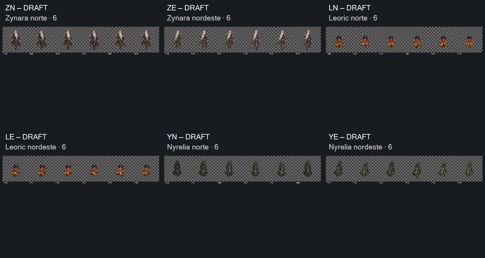

DRAFT — direção visual das36revisões aceita em2026-10-17. Zynara, Leoric e Nyrelia: norte e nordeste, seis poses em cada ciclo. 52 tentativas preservadas. Preparação e implementação com Claude.
Compare primeiro os quadros iniciais: identidade posterior, mãos e acessórios, proporções e direção. Depois veja os ciclos a 2/4/8 FPS, pause e percorra os seis quadros para avaliar troca das pernas, balanço e retorno. 8 FPS é apenas prévia. Aceite visual registrado por código/revisão/hash; retenções técnicas preservadas.
Canvas integral 1254×1254 em todas as prévias, sem ajuste oculto de tamanho ou apoio. As leituras reduzidas recortam somente o contorno para inspeção estática e não certificam escala relativa. Não há rosto/máscara frontal nas costas; o painel posterior de Nyrelia permanece proposta DRAFT.
Retenções: alfa, margem, registro/escala e cadência. Nyrelia N/NE ainda desce nos contatos opostos, mesmo após três tentativas nos quadros 03/04. Leoric mantém porte menor, mas a proporção final dos três precisa de validação contra os idles. Estas fontes não estão prontas para importação direta.
Zero contato alfa≥16 na banda externa de 4 px. Margens mínimas 123–262 px; 11/36 abaixo do alvo de 12%. Alfa modal253 e resíduos de baixa opacidade. Variação da base do núcleo: ZN8, ZE31, LN22, LE16, YN36, YE60 px. Bbox é proxy e inclui cabelo, cajado e pés; não prova pivô correto.
Entrega para Claude · Manifesto e seleção · Medidas · 52 prompts exatos · 9 referências · Origens por chamada · Controles offline · Integridade · Contrato · Tentativas e retenções
Recibo do aceite visual · Entrega consolidada da fila

2026-10-17 · Aceite humano dos primeiros quadros e das36revisões registrado: aprovado, proximo. Controles verificados em simulação DOM offline; render real e fluidez não certificados. BUG-027 permanece aberto. Sem integração, CANON ou playtest.